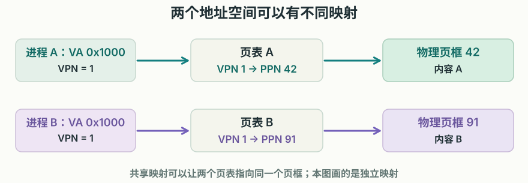
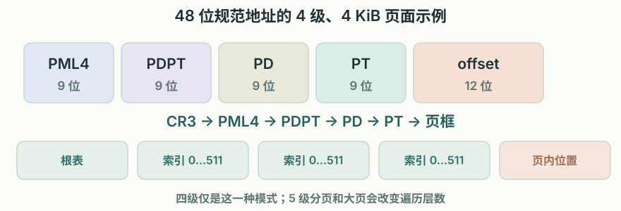
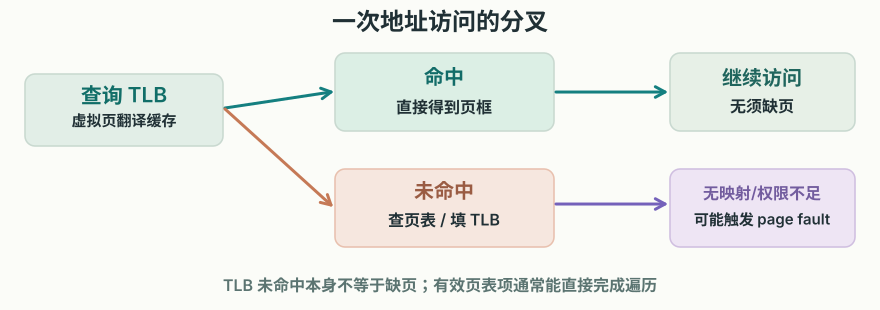
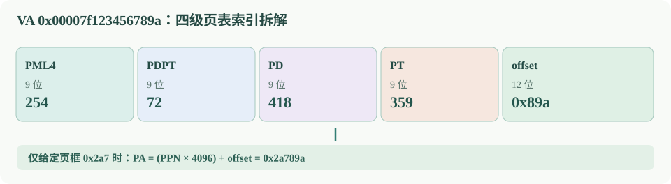
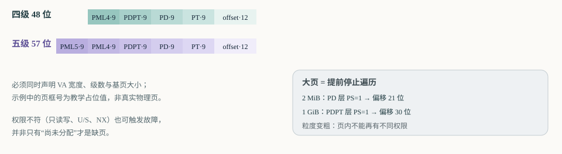

虚拟内存 / 17
两个进程都访问 0x1000，为什么互不干扰？
虚拟地址不是“贴上标签的物理地址”。它是在当前进程地址空间中解释的一个位置：页表可以把相同虚拟页映射到不同物理页，也可以让不同进程共享同一物理页。页表提供隔离与共享，TLB 则让这种翻译可高效重复使用。
主线采用 x86-64 的传统 48 位规范虚拟地址、4 KiB 基页、四级页表作教学示例。实际硬件还可能使用五级分页、2 MiB / 1 GiB 大页及其他体系结构的翻译方式。
17.1 相同虚拟页，不代表相同物理页
想象进程 A 和 B 都读取虚拟地址 0x1000：页表 A 可以指向物理页框 42，页表 B 可以指向物理页框 91。除非内核显式安排共享映射，它们读到的未必是相同内容。内核还能把部分虚拟页设为不可访问，利用权限位保护内存。

虚拟内存主要提供地址隔离、权限控制、灵活映射和按需调页。它并不保证所有虚拟空间可以兑现为物理内存；操作系统的提交策略、资源限制、交换与 OOM 行为决定了超额申请之后会发生什么。低地址（如空指针附近）通常不映射，但 C 标准不承诺非法解引用一定变成 SIGSEGV。
17.2 拆解地址：页号与页内偏移
以 4 KiB = 2¹² 字节的页面为例，虚拟地址最低 12 位是页内偏移，其余部分决定虚拟页号（VPN）。在传统 x86-64 48 位分页模式中，地址的规范形式需要高 16 位复制 bit 47 的符号位；有效的 48 位部分由四组 9 位索引和 12 位偏移构成。

举个固定的教学映射：虚拟地址 0x12345678 的 VPN 为 0x12345，偏移 0x678。如果其页表映射到物理页框 0x2a7，物理地址就为 0x2a7678。这只是自定义映射示例，普通用户态代码无法据此推断真实的物理页号。
交互：拖动偏移，页号会变化吗？
固定 VPN = 0x12345，假定 PPN = 0x2a7；只有偏移随滑块改变。
若虚拟空间足够稀疏，多级页表可以省去完全未使用的子树，而不是给全部虚拟页预先分配 PTE。四级是这个示例的模式，并非 x86-64 永久固定的规格。Linux 内核还使用统一的五层抽象，并在不需要的架构/模式下折叠层级。Linux kernel：Page Tables 详细解释层级与缺页路径。
17.3 TLB miss 不等于 page fault
每次都遍历多级页表显然昂贵，因此处理器缓存近期翻译结果，这个硬件缓存叫 TLB。TLB 命中可省去页表遍历；TLB 未命中通常触发页表遍历。如果页表记录的映射有效且权限允许，遍历后填入 TLB 即可继续，完全不需要内核处理缺页。

TLB 的效果还取决于工作集、局部性与页大小。例如 64 个独立 4 KiB 翻译最多覆盖 256 KiB；如果都对应 2 MiB 页面，理论覆盖可达 128 MiB。这仅是条目数与页大小的算术例子，不代表某款 CPU 真的用一组同样的 TLB 条目支持两类页面，也不能据此保证开启大页会提高某个程序的性能。
也不要写“每次切换进程必须清空所有 TLB”：现代 x86 可用 PCID 等机制关联地址空间标识，部分条目可跨切换保留。修改映射或权限可能要求让相关 CPU 的旧翻译失效（TLB shootdown），但也不是“每一次上下文切换都会向所有核心广播 IPI”。
17.4 缺页异常：不总是读磁盘，也不总是错误
当页表缺少所需的有效映射、或访问权限不满足时，CPU 可以触发 page fault。内核根据虚拟内存区域和访问类型决定：分配零填充匿名页、执行写时复制（COW）、从文件或交换区调入页、更新映射后重试，还是向进程报告非法访问（常见为 SIGSEGV，某些文件映射错误可能是 SIGBUS）。
| 情况 | 可能的处理 | 是否一定发生磁盘读取？ |
|---|---|---|
| 首次读取匿名私有映射 | 可关联共享只读零页 | 否 |
| 首次写入匿名私有映射 | 分配并清零页框、建立可写映射 | 否 |
| 写入 COW 私有页 | 复制原页并更新映射 | 否 |
| 文件映射不在页缓存 | 文件 I/O，可能是 major fault | 可能 |
| 地址未映射或权限不符 | 报告访问错误 | 不一定 |
Linux 的 minor fault 与 major fault 主要区分是否需要 I/O 才能完成缺页处理，而不是“minor=共享库、major=交换分区”的固定分类。缺页后“下一次一定 TLB 命中”也不成立，缓存内容受替换与并发事件影响。
# Linux 上观察某次运行的页故障计数
perf stat -e minor-faults,major-faults ./your_program
# 若工具或权限不可用，也可先查看进程运行时统计
/usr/bin/time -v ./your_program基准测试的 fault 数不能脱离缓存冷热、访问模式与系统状态比较；将一段匿名 memset 直接归因于“成百万次 major fault 导致磁盘读取”通常是错误的解释。
17.5 最小实验：只计算页分解，不猜物理映射
/* 纯算术，不触摸虚拟地址 0x12345678 */
#include <inttypes.h>
#include <stdint.h>
#include <stdio.h>
int main(void) {
uint64_t va = UINT64_C(0x12345678);
uint64_t vpn = va >> 12;
uint64_t offset = va & UINT64_C(0xfff);
uint64_t ppn_demo = UINT64_C(0x2a7);
uint64_t pa_demo = (ppn_demo << 12) | offset;
printf("vpn=%" PRIx64 " offset=%" PRIx64
" toy-pa=%" PRIx64 "\n", vpn, offset, pa_demo);
}编译运行：cc -std=c11 -Wall -Wextra -pedantic examples/olah-ch17-vm.c -o vm && ./vm。更进一步用 sysconf(_SC_PAGESIZE) 查询本机基础页大小，不要假设所有平台都是 4 KiB。
自测
一个有效页表映射对应的虚拟页不在 TLB 中，处理器必须向内核发出 page fault 吗？
查看答案
不必。常见硬件页表遍历能找到有效 PTE 并填充 TLB，之后继续访问；只有映射或权限无法满足时才进入异常处理路径。
逐步核验 · 17 / SYSTEM MODEL
给定一条 48 位地址，四层页表究竟取哪四个索引？

假定 CPU 使用 x86-64 的四级分页、48 位规范虚拟地址与 4 KiB 基页。给出一个明确输入 VA = 0x00007f123456789a。页内偏移来自 VA & 0xfff = 0x89a；剩下的有效地址位按每 9 位一组被四层页表用作索引。
| 字段 | 位范围 | 计算 | 结果 |
|---|---|---|---|
| PML4 | 47:39 | (VA >> 39) & 0x1ff | 254 |
| PDPT | 38:30 | (VA >> 30) & 0x1ff | 72 |
| PD | 29:21 | (VA >> 21) & 0x1ff | 418 |
| PT | 20:12 | (VA >> 12) & 0x1ff | 359 |
| 页内偏移 | 11:0 | VA & 0xfff | 0x89a |
以上仅确定在当前地址空间中要查哪些索引，不保证其中的页表项存在，更不可能仅凭虚拟地址推导出真实物理页框。为了完整走一遍算术，额外假设页表项最终给出物理页框号 PPN = 0x2a7，才有：
假如 TLB 不命中但有效页表项存在，处理器可以遍历页表并填充 TLB，无需发生页故障；如果相应映射尚未建立但允许按需分配，则可能触发可由操作系统处理的缺页；如果地址不属于可访问的有效映射，则可能产生访问错误。CPU 的 TLB miss、缺页异常、磁盘 I/O 是三个不同层面的事件。2 MiB/1 GiB 大页会提前停止遍历；启用 5 级分页时索引层数也不同。
python3 examples/deep-ch13-18-models.py 17
# 与浏览器现有地址分解交互独立，不读取物理页映射。计算规则可据 Linux Kernel Documentation · Page Tables 和 Intel SDM · IA-32e Paging核对；本例并未通过特权指令观察页表内容。
逐步核验 · 17b / LEVELS & HUGE PAGES
同一台机器可能是 4 级或 5 级分页：字段怎么变？

上一节用的是四级分页、48 位虚拟地址、4 KiB 基页。这个前提不能省略：如果开启 Intel 的五级分页（LA57），虚拟地址宽度变为 57 位，多出一层 PML5 索引，拆分变成 9+9+9+9+9+12。所以「四层页表」只是一个教学映射，不是所有机器的事实。
| 模式 | VA 宽度 | 拆分（位） | 页内偏移 |
|---|---|---|---|
| 四级分页 | 48 | 4×9 + 12 | 4 KiB |
| 五级分页 | 57 | 5×9 + 12 | 4 KiB |
| 2 MiB 大页 | 48 | 2×9 + 21（在 PD 停止） | 2 MiB |
| 1 GiB 大页 | 48 | 1×9 + 30（在 PDPT 停止） | 1 GiB |
大页的本质是提前停止遍历：叶级页表项置 PS 位后，直接用更宽的偏移拼页框地址，少读一级页表。代价是映射粒度变粗：一个 2 MiB 大页内部不能再有不同权限，也更容易因内部一块活跃数据而保持整页驻留。
权限也会触发故障。页表项可访问还要看权限位：只读页上的写会触发保护性故障（也是写时复制实现的基础）；用户态访问 U/S=0 的页会被拒绝；取指到 NX 页同样出错。因此「缺页」不都是「尚未分配」：映射存在但权限不符时，内核通常直接向进程报错，而不是悄悄补一页。
上表中的页框编号（PPN/物理页号）只是教学占位值；普通进程无法通过合法指令得到真实物理地址，本节不把任何示例 PPN 当作实际物理页。要验证实际页表布局需特权或内核接口，超出本章范围。
python3 examples/deep-ch13-18-models.py 17 # 四级 48 位地址拆分
python3 examples/deep-ch13-18-b.py 17b # 57 位拆分 + 大页偏移对比字段规则可据 Linux Kernel Documentation · Page Tables 与 Intel SDM · IA-32e Paging 核对；具体级数与偏移以你机器实际启用的模式为准。
归纳：分清翻译、缓存与缺页
虚拟页定义“进程看到什么”，页表定义“它映射到哪里”，TLB 缓存“近期翻译结果”，缺页异常让内核处理“尚未建立或不允许的访问”。下一章把视角移到 malloc / free：用户态分配器怎样在这些虚拟映射之上管理对象。
延伸阅读
Linux Page Tables、mmap(2)、Intel 软件开发手册；上述教学例子采用四级分页与 4 KiB 基页。